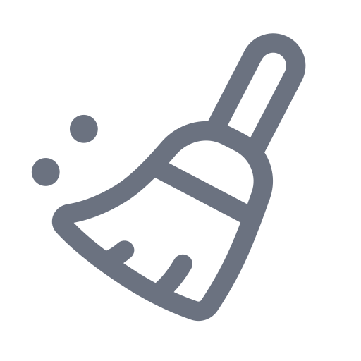

Program Pencegahan Pergigian Negeri Kedah
Analitik untuk program pencegahan karies, amalan MMI, dan outreach mengikut daerah.
Clinical Prevention Program for Caries
—

Malaysian Modified ICDAS
—
Outreach
—
Program Pencegahan Pergigian Negeri Kedah
Tutup